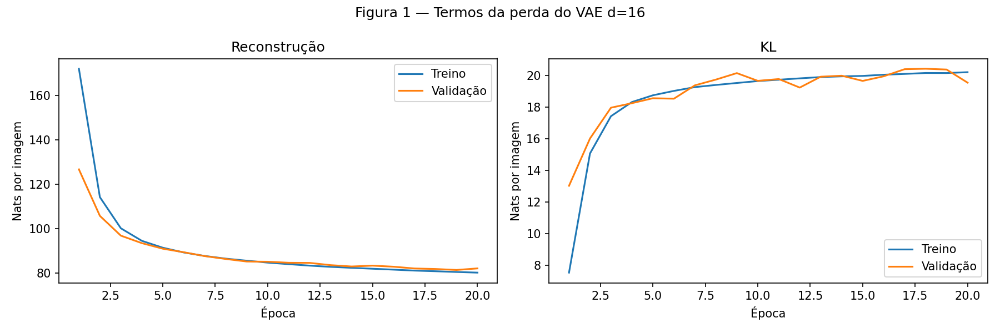
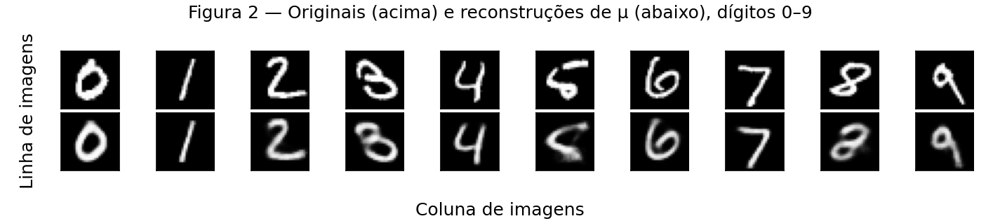
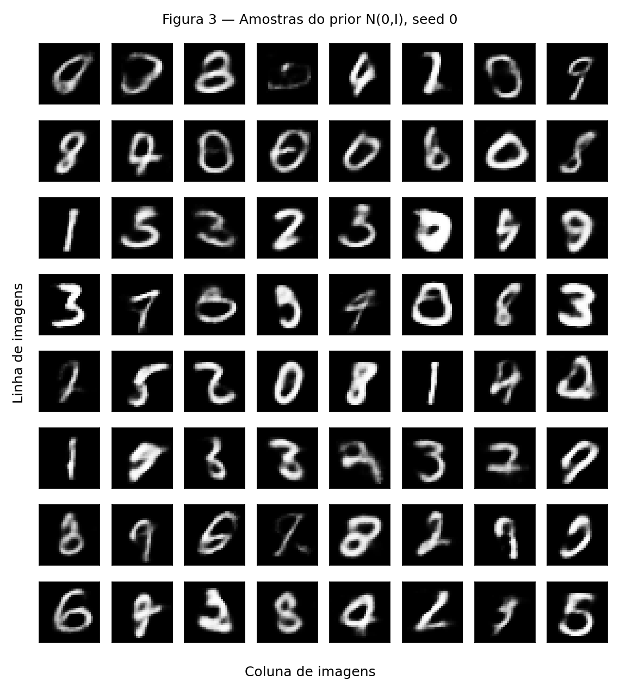
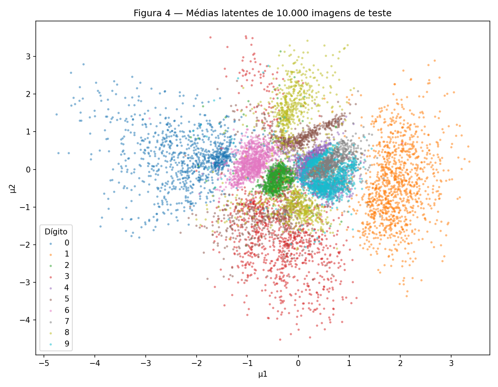
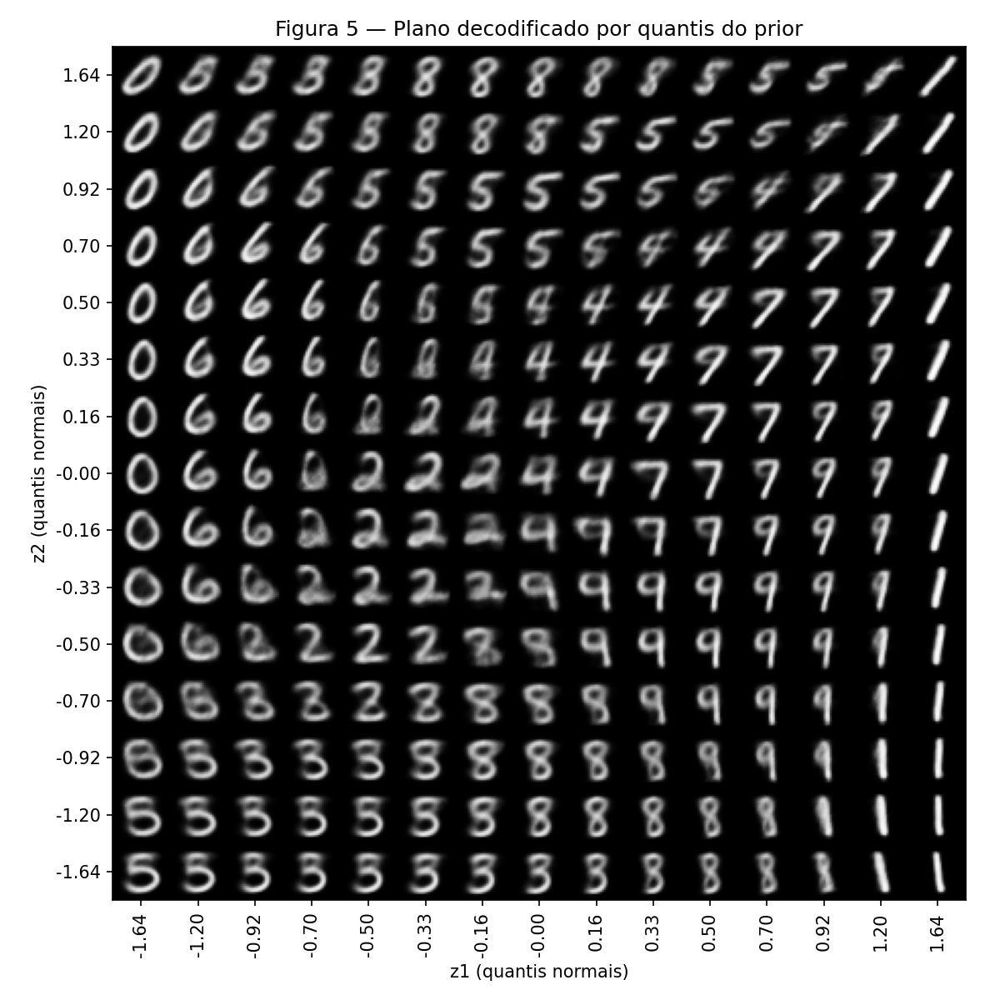
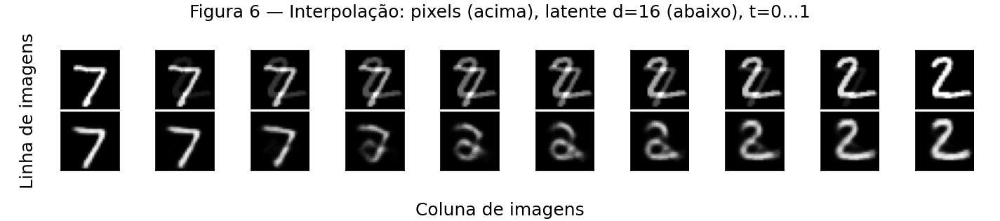

VAE — Reconstrução e espaço latente no MNIST
Autoria e uso de IA. Este relatório foi desenvolvido com colaboração do Codex (OpenAI). Para auxiliar no desenvolvimento dos códigos.
Autor: João Bresser Pereira
Disciplina: Artificial Neural Networks and Deep Learning — 2026.2
Enunciado · Notebook executável · Resultados completos.
O mesmo VAE é treinado com d=16 e d=2. Os rótulos só são usados para colorir e selecionar exemplos depois do treinamento; não entram no encoder, decoder ou perda. Não usamos uma classe pronta de VAE.
Código reproduzível
python -m pip install -r requirements.txt
python -m pip install -r docs/exercises/vae/code/requirements.txt
python docs/exercises/vae/code/prepare_data.py
python docs/exercises/vae/code/train.py
python docs/exercises/vae/code/write_report.py
Modelo e perda · Treinamento e figuras · Preparação. O MNIST é baixado na primeira execução. Dados e checkpoints ficam fora do Git; relatório, resultados e figuras são versionados. Foram usados PyTorch 2.15.0+cpu, torchvision 0.29.2+cpu, CPU com duas threads e algoritmos determinísticos. Tempo medido: 130.8s (d=16) e 142.8s (d=2), sem incluir o download. Hardware e versões podem alterar os resultados finais.
Exercise 1
A — Load and split the data
Usamos MNIST de torchvision: pixels uint8 são convertidos a float32 em [0,1] e achatados em 784 entradas. O treino oficial de 60.000 imagens é dividido com random_split e um gerador dedicado com seed 42: 50.000 treino e 10.000 validação. O teste oficial tem 10.000 imagens. A divisão não é estratificada, mas seus índices são disjuntos e cobrem o treino original inteiro. Os primeiros cinco índices de treino são 37542, 43087, 2992, 25810 e 39634; os de validação, 59753, 9414, 10988, 15501 e 49861. As contagens por dígito e as verificações estão em data_summary.json.
Os loaders usam batch 128 e somente o treino é embaralhado. Para acelerar a execução em CPU, train.py carrega os mesmos índices em tensores, dividindo os pixels por 255, sem mudar o split ou a normalização. O último batch menor recebe o peso proporcional ao seu tamanho nas médias.
B — Build the model
Encoder 784 → 512 → 256, ReLU após as duas camadas; heads lineares 256 → d para μ e log σ². Decoder d → 256 → 512 → 784, ReLU nas ocultas e sigmoid na saída. Primeiro, d=16.
A reparametrização foi implementada explicitamente:
A imagem reconstruída é decoder(z). Cada termo é somado nas dimensões e depois dividido pelo número de imagens B do batch:
Usamos β=1. BCE corresponde à hipótese de saída Bernoulli, adequada ao exercício com pixels normalizados e sigmoid; MSE corresponderia a uma hipótese Gaussiana. reduction='sum' na BCE evita reduzir o termo de reconstrução por um fator extra de 784. A KL é a expressão fechada escrita no código, sem torch.distributions.kl_divergence.
C — Train
Adam, taxa 0,001, batch 128, 20 épocas, sem early stopping ou seleção por teste. Antes de cada modelo: torch.manual_seed(42); cada loader de treino recebe um gerador novo com seed 42. A validação acompanha os dois termos ao fim de cada época, sem backward. Os pesos finais da época 20 são usados no teste. Não ajustamos hiperparâmetros para aproximar os números de referência.
| Modelo | Reconstrução no teste | KL no teste | Soma / ELBO negativo |
|---|---|---|---|
| d=16 | 81.5687 | 19.5978 | 101.1665 |
Todas as perdas estão em nats por imagem. A avaliação usa uma amostra de z por imagem, com gerador local fixo (seed 123 no teste, 2026 na validação). A soma é uma estimativa Monte Carlo do ELBO negativo, não o negativo da log-verossimilhança marginal exata. A KL é calculada analiticamente. A reconstrução por μ da Figura 2 é determinística e não substitui essa avaliação estocástica.

No treino, a reconstrução vai de 172.0563 a 80.2701; KL, de 7.5264 a 20.2162. Na validação, a KL inicial/final é 13.0235 / 19.5547. Os termos do treino são médias ponderadas durante as atualizações da época; a validação mede o modelo congelado ao final dela.
D — Reconstructions and samples

As colunas vão de 0 a 9. Índices zero-based no teste: [3, 2, 1, 18, 4, 8, 11, 0, 61, 7]. A linha de baixo usa decoder(μ), sem sortear z, isolando a reconstrução representativa de cada imagem e evitando que ruído de amostragem mude a comparação visual.

A grade 8×8 vem de 64 vetores N(0,I) de dimensão 16, sorteados depois de torch.manual_seed(0). São imagens novas geradas pelo decoder, sem selecionar os melhores exemplos.
E — Analysis
- O otimizador aceita pagar mais KL quando a redução de reconstrução compensa: codificar informação específica da imagem afasta q(z|x) do prior, mas ajuda a reconstruir. A KL não precisa cair junto com a soma. Neste treino a soma inicial/final é 179.5827 / 100.4863.
- Há duas razões distintas para amostras piores: o prior pode sortear regiões pouco cobertas pelo posterior agregado, pois a regularização não torna as distribuições exatamente iguais; e o decoder sigmoid retorna probabilidades por pixel, produzindo contornos médios quando há ambiguidade. A imagem de probabilidades é mostrada diretamente, sem sortear pixels Bernoulli. A limitação da hipótese de pixels condicionalmente independentes contribui para borramento.
- Decodificar μ controla o acaso na comparação original/reconstrução. Não é garantia matemática de ser a melhor reconstrução e decoder(E[z]) não precisa ser E[decoder(z)], pois o decoder é não linear. Aqui é a convenção solicitada para a Figura 2.
Exercise 2
A — Train a 2-D VAE
Só alteramos d de 16 para 2. Arquitetura restante, split, seed, β, Adam, batch e 20 épocas são iguais. O número de parâmetros muda nas heads e na entrada do decoder por consequência de d.
| d | Reconstrução no teste | KL no teste | Soma |
|---|---|---|---|
| 16 | 81.5687 | 19.5978 | 101.1665 |
| 2 | 135.6478 | 6.5727 | 142.2204 |
O custo medido de compressão para duas coordenadas é 54.0790 nats adicionais de reconstrução por imagem. KL menor não implica modelo melhor: há menos dimensões para transmitir informação e para pagar regularização.
B — The encoded test set

Cada um dos 10.000 pontos é μ de uma imagem de teste; a cor é o rótulo real, visto somente para o gráfico. Separação visual não é acurácia de um classificador. As nuvens se sobrepõem: o objetivo foi reconstrução regularizada, não maximizar a separação supervisionada de dígitos.
C — The decoded plane

Usamos 15 quantis igualmente espaçados entre 0,05 e 0,95, transformados por norm.ppf. Intervalos entre quantis consecutivos têm a mesma massa normal, 0,9/14, logo os retângulos entre pontos adjacentes têm massa (0,9/14)² sob o prior independente. As 225 imagens mostram pontos representativos, não 225 caixas com limites definidos. A grade cobre a região entre os quantis 5% e 95%, deixando as caudas de fora. Os rótulos dos eixos são os quantis normais reais; o espaço visual entre tiles é uniforme em probabilidade, não em distância euclidiana z.
D — Interpolation
Índices escolhidos no teste: 0 e 1, dígitos 7 e 2. São exemplos diferentes fixados antes de inspecionar a qualidade da interpolação; não buscamos uma trajetória favorável.

A primeira linha é (1−t)xₐ+t xᵦ. A segunda usa o modelo d=16, decodificando (1−t)μₐ+t μᵦ. Há dez valores de t igualmente espaçados de 0 a 1. As extremidades inferiores são reconstruções dos exemplos, não cópias das imagens originais.
E — Analysis
Na Figura 4, os dígitos 4 e 9 se sobrepõem na região à direita do centro, aproximadamente μ1 entre 0,3 e 0,8 e μ2 entre −0,5 e 0,3. Na Figura 5, nas colunas z1≈0,33–0,70 e linhas z2≈−0,16–0,33, aparecem transições entre 4 e 9: o traço superior se fecha gradualmente, enquanto a haste permanece, produzindo imagens intermediárias ambíguas. Os limites são leituras visuais aproximadas, não uma classificação das células. Há também uma transição 0/6 à esquerda do mapa. Duas coordenadas precisam compartilhar informação sobre identidade, espessura, inclinação e estilo. O aumento medido de reconstrução confirma a perda de detalhe; KL menor sozinha não mede qualidade. A grade mostra mudanças suaves de traço e regiões ambíguas, não um catálogo de classes isoladas.
Na Figura 6, a mistura de pixels sobrepõe traços e apaga intensidades sem respeitar a estrutura de um dígito. O caminho latente passa pelo decoder, que aprendeu combinações de traços e tende a gerar formas mais coerentes, mas não há garantia de que toda interpolação passe só por dígitos legíveis. A regularização favorece continuidade perto das regiões treinadas, sem assegurar cobertura perfeita.
Results summary
| # | Quantity | Value |
|---|---|---|
| 1 | Ex. 1 — reconstrução, KL e ELBO negativo no teste, d=16 | 81.5687; 19.5978; 101.1665 nats/imagem |
| 2 | Ex. 1 — KL de validação, primeira/última época | 13.0235; 19.5547 nats/imagem |
| 3 | Ex. 2 — reconstrução e KL no teste, d=2 | 135.6478; 6.5727 nats/imagem |
| 4 | Ex. 2 — índices de teste interpolados | 0 e 1, dígitos 7 e 2 |